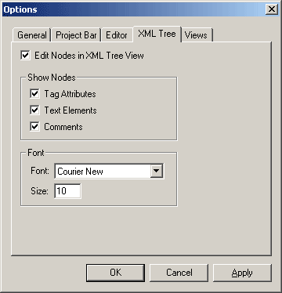

Show Nodes
- Configure what kind of XML nodes to show in the tree.
Font
- Configure the Font name and Font size of the text in the XML Tree.
Below is a screenshot of the XML Tree Tab in Options Dialog:
